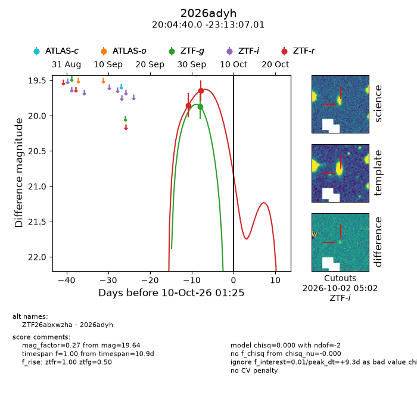
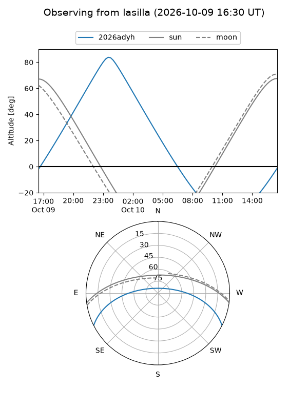
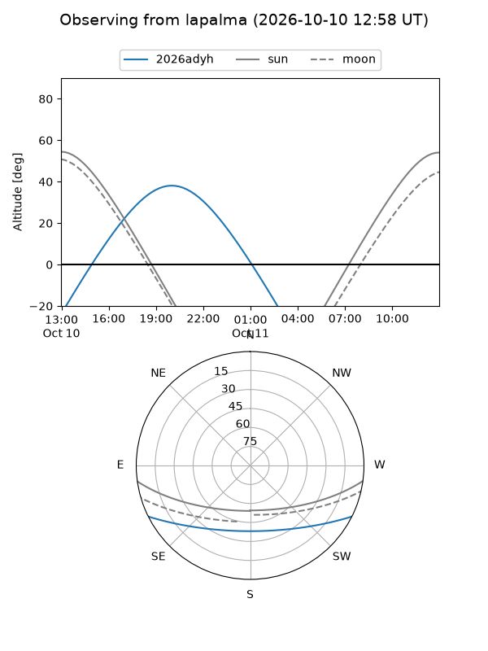
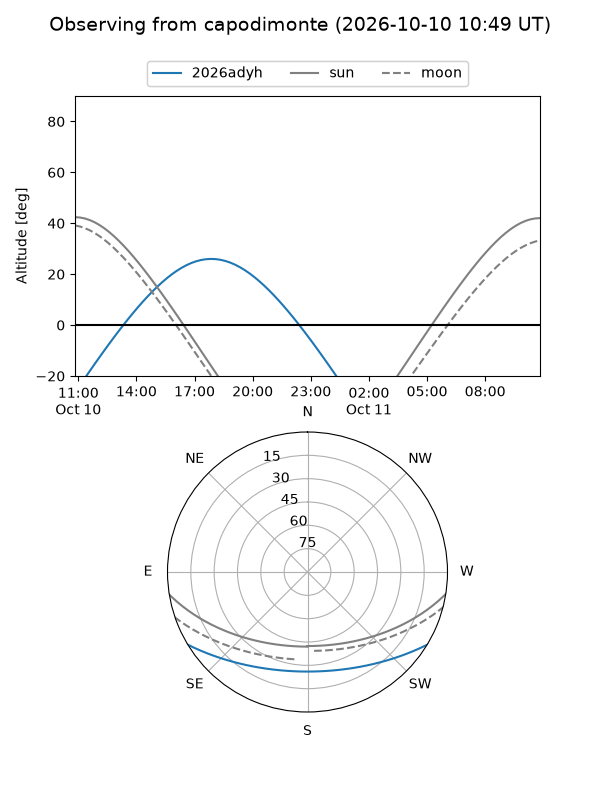
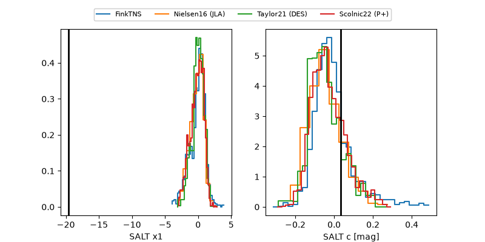

2026adyh
Target 2026adyh at 2026-10-10 13:26
Aliases and brokers:
FINK-ZTF: ztf.fink-portal.org/ZTF26abxwzha
Lasair-ZTF: lasair-ztf.lsst.ac.uk/objects/ZTF26abxwzha
ALeRCE-ZTF: alerce.online/object/ZTF26abxwzha
YSE-PZ: ziggy.ucolick.org/yse/transient_detail/2026adyh
TNS name: wis-tns.org/object/2026adyh
Direct TNS query: direct search
alt names
ZTF26abxwzha (ztf,fink_ztf)
2026adyh (tns,yse)
Coordinates:
equatorial (ra, dec) = 301.1666,-23.21861
equatorial (HMS+DMS) = 20:04:39.99,-23:13:07.01
galactic (l, b) = (18.8267,-25.89227)
Flags:
peak dt: +9.8
Photometry:
last ztfg=19.87, ztfr=19.64
1 ztfg, 2 ztfr detections
Lightcurve

Visibility



Additional plots
